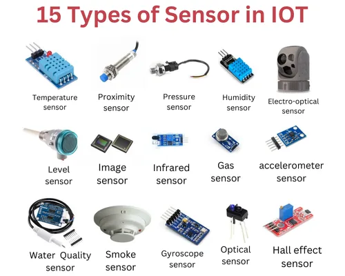
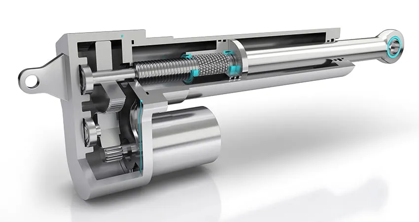

The Challenge: Time is passing and the environment is changing. If the soil gets too dry, it will crack and your crops will wither and die. You must architect an IoT logic system below to automatically save the field.
[SYS] System ready. Awaiting simulation start...


Ans: A Smart Agriculture System leverages the Internet of Things (IoT) to create a network of interconnected physical devices that collect and exchange field data over the internet without human intervention. This enables precise, automated farming to maximize yield and minimize resource wastage.
I. System Architecture & Components
II. Complete Workflow
Physical quantity detected → Converted to electrical signal → Processed by Microcontroller/Cloud → Logic threshold checked → Actuator turned ON/OFF automatically.